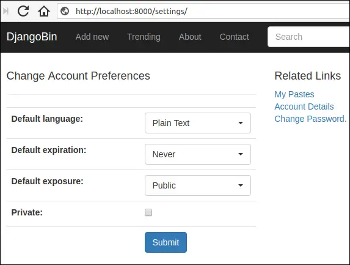
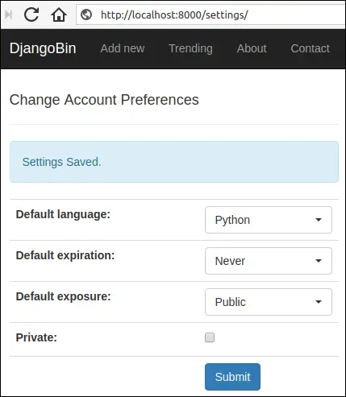
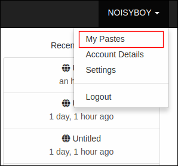
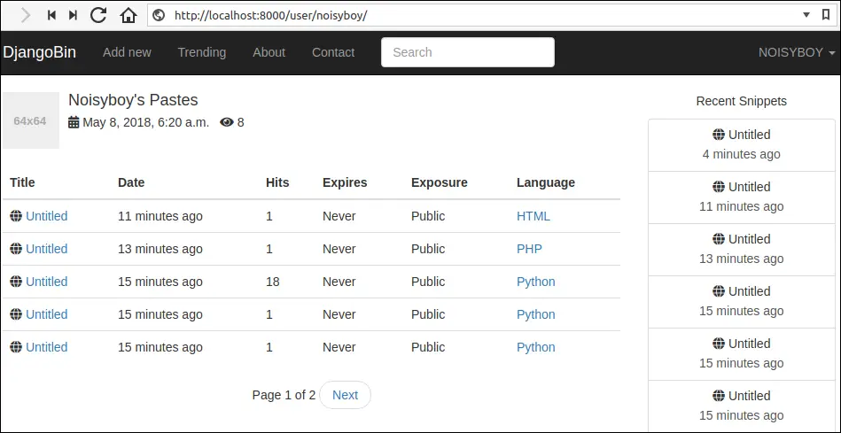
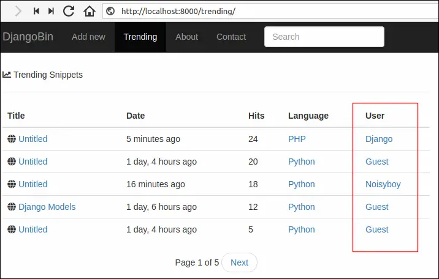
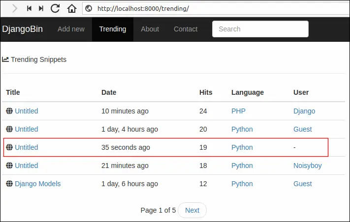
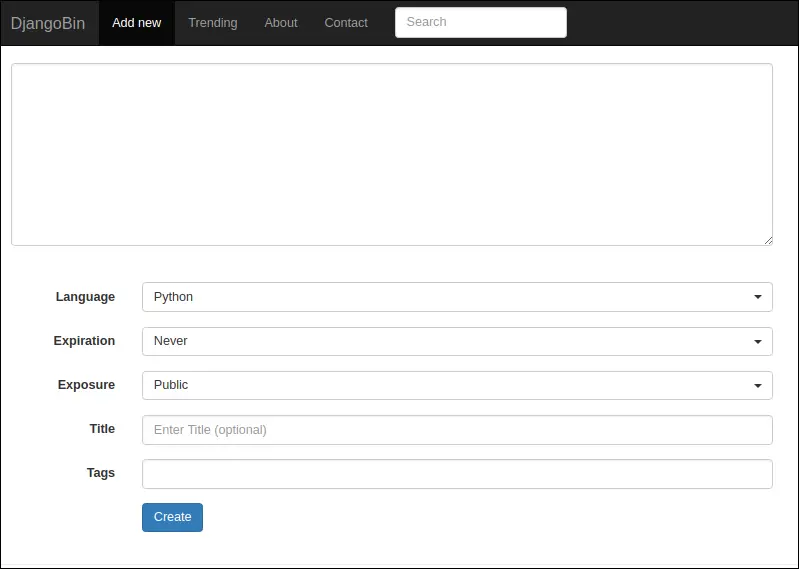
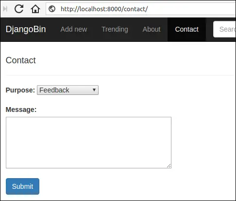

Building profile pages for Djangobin
Last updated on July 27, 2020
Creating Settings View #
The settings view will allow a logged in user to change preferences like default language, expiration and exposure. It also allows a user to change the profile visibility option.
The profile view (which we will create next) shows a paginated list of snippets created by the user in reverse chronological order (i.e latest first). By default, the profile page is public.
All these settings are defined by the Author model. For your reference, here is how it looks like:
djangobin/django_project/djangobin/models.py
1 2 3 4 5 6 7 8 9 10 11 12 | #...
class Author(models.Model):
user = models.OneToOneField(User, related_name='profile')
default_language = models.ForeignKey(Language, on_delete=models.CASCADE,
default=get_default_language)
default_exposure = models.CharField(max_length=10, choices=Pref.exposure_choices,
default=Pref.SNIPPET_EXPOSURE_PUBLIC)
default_expiration = models.CharField(max_length=10, choices=Pref.expiration_choices,
default=Pref.SNIPPET_EXPIRE_NEVER)
private = models.BooleanField(default=False)
views = models.IntegerField(default=0)
#...
|
Let's start by adding a class named SettingForm in forms.py as follows:
djangobin/django_project/djangobin/forms.py
1 2 3 4 5 6 7 8 9 10 11 12 13 14 | #...
class SettingForm(forms.ModelForm):
class Meta:
model = Author
fields = ('default_language', 'default_expiration' , 'default_exposure' , 'private')
widgets = {
'default_language': forms.Select(attrs={'class': 'selectpicker foo form-control',
'data-live-search': 'true',
'data-size': '5'}),
'default_expiration': forms.Select(attrs={'class': 'selectpicker form-control'}),
'default_exposure': forms.Select(attrs={'class': 'selectpicker form-control'})
}
|
In the views.py, add settings() view just below the activate_account() view as follows:
djangobin/django_project/djangobin/views.py
1 2 3 4 5 6 7 8 9 10 11 12 13 14 15 16 17 18 19 | #...
from .forms import SnippetForm, ContactForm, LoginForm, CreateUserForm, SettingForm
#...
@login_required
def settings(request):
user = get_object_or_404(User, id=request.user.id)
if request.method == 'POST':
f = SettingForm(request.POST, instance=user.profile)
if f.is_valid():
f.save()
messages.add_message(request, messages.INFO, 'Settings Saved.')
return redirect(reverse('djangobin:settings'))
else:
f = SettingForm(instance=user.profile)
return render(request, 'djangobin/settings.html', {'form': f})
|
The code for settings.html template is as follows:
djangobin/django_project/djangobin/templates/djangobin/settings.html
1 2 3 4 5 6 7 8 9 10 11 12 13 14 15 16 17 18 19 20 21 22 23 24 25 26 27 28 29 30 31 32 33 34 35 36 37 38 39 40 41 42 43 44 45 46 47 48 49 50 51 52 | {% extends 'djangobin/base.html' %}
{% load static %}
{% load humanize %}
{% block title %}
Account Preferences - {{ block.super }}
{% endblock %}
{% block main %}
<div class="row">
<div class="col-lg-6 col-md-6 col-sm-6">
<h4>Change Account Preferences</h4>
<hr>
{% if messages %}
{% for message in messages %}
<p class="alert alert-info">{{ message }}</p>
{% endfor %}
{% endif %}
<form action="" method="post" class="form-horizontal" >
{% csrf_token %}
<table class="table">
{{ form.as_table }}
<tr>
<td> </td>
<td><button type="submit" class="btn btn-primary">Submit</button></td>
</tr>
</table>
</form>
</div>
<div class="col-lg-6 col-md-6 col-sm-6">
<h4>Related Links</h4>
<p>
<a href="">My Pastes</a> <br>
<a href="">Account Details</a> <br>
<a href="/password-change/">Change Password.</a> <br>
</p>
</div>
</div>
{% endblock %}
|
Add a new URL pattern named settings to urls.py as follows:
djangobin/django_project/djangobin/urls.py
1 2 3 4 5 6 7 8 9 10 | #...
urlpatterns = [
#...
url(r'password-reset-complete/$',
auth_views.password_reset_complete,
{'template_name':'djangobin/password_reset_complete.html'},
name='password_reset_complete'),
url('^settings/$', views.settings, name='settings'),
]
|
At last, add a link to the settings page to base.html as follows:
djangobin/django_project/djangobin/templates/djangobin/base.html
1 2 3 4 5 6 7 8 9 10 11 12 13 14 15 16 | {# ... #}
{% if request.user.is_authenticated %}
<ul class="dropdown-menu">
<li><a href="">My Pastes</a></li>
<li><a href="">Account Details</a></li>
<li><a href="{% url 'djangobin:settings' %}">Settings</a></li>
<li role="separator" class="divider"></li>
<li><a href="{% url 'djangobin:logout' %}">Logout</a></li>
</ul>
{% else %}
<ul class="dropdown-menu">
<li><a href="{% url 'djangobin:signup' %}">Sign Up</a></li>
<li><a href="{% url 'djangobin:login' %}?next={{ request.path }}">Login</a></li>
</ul>
{% endif %}
{# ... #}
|
Login to Djangobin and visit http://localhost:8000/settings/. You should see Account Preferences page like this:

Select the desired preferences and hit submit. You should see a "Settings Saved." message as follows:

Creating Profile View #
The profile view shows a paginated list of snippets created by a user in reverse chronological order (i.e latest first). If the user's profile is private then its username will not appear in the trending snippet page, and tag list page.
Open views.py and update profile() view function as follows:
djangobin/django_project/djangobin/views.py
1 2 3 4 5 6 7 8 9 10 11 12 13 14 15 16 17 18 19 20 21 22 23 24 25 26 27 28 29 | from django.shortcuts import (HttpResponse, render, redirect,
get_object_or_404, reverse, get_list_or_404, Http404)
#...
def profile(request, username):
user = get_object_or_404(User, username=username)
# if the profile is private and logged in user is not same as the user being viewed,
# show 404 error
if user.profile.private and request.user.username != user.username:
raise Http404
# if the profile is not private and logged in user is not same as the user being viewed,
# then only show public snippets of the user
elif not user.profile.private and request.user.username != user.username:
snippet_list = user.snippet_set.filter(exposure='public')
user.profile.views += 1
user.profile.save()
# logged in user is same as the user being viewed
# show everything
else:
snippet_list = user.snippet_set.all()
snippets = paginate_result(request, snippet_list, 5)
return render(request, 'djangobin/profile.html',
{'user' : user, 'snippets' : snippets } )
|
This is how the view function works:
The view takes an additional argument named
usernamewhich will come from the URL.In line 7, we are using
get_object_or_404()to fetch the relevantUserobject. If no matching object found,get_object_or_404()will return an HTTP 404 error.In line 11, we are checking if the profile is private and logged in user is not same as the user being viewed. If the condition comes out to be true we show an HTTP 404 error; otherwise, the program control is transferred to the elif statement in line 16.
In line 16, we are checking if the profile is not private and logged in user is not same as the user being viewed. If the condition is true, we retrieve the public snippets of the user and increment the profile view count by 1; otherwise, the program control is transferred to the else statement in line 23.
If the program control comes to the else statement then it means that the logged in user is same as the user being viewed. As a result, we fetch all the snippets of the user.
In line 26, we are calling
paginate_result()to get the paginated result. Finally, in line 28, we render the template with the context data by callingrender()function.
The code for the profile.html is as follows:
djangobin/django_project/djangobin/templates/djangobin/profile.html
1 2 3 4 5 6 7 8 9 10 11 12 13 14 15 16 17 18 19 20 21 22 23 24 25 26 27 28 29 30 31 32 33 34 35 36 37 38 39 40 41 42 43 44 45 46 47 48 49 50 51 52 53 54 55 56 57 58 59 60 61 62 63 64 65 66 67 68 69 | {% extends 'djangobin/base.html' %}
{% load static %}
{% load humanize %}
{% block main %}
<div class="media post-meta">
<div class="media-left">
<a href="#">
<img alt="64x64" class="media-object" data-src="holder.js/64x64" src="" data-holder-rendered="true" style="width: 64px; height: 64px;">
</a>
</div>
<div class="media-body">
<h4 class="media-heading">{{ user.username|capfirst }}'s Pastes</h4>
<p>
<i class="fas fa-calendar-alt" data-toggle="tooltip" title="" data-original-title="Account creation date" ></i> {{ user.date_joined }}
<i class="fas fa-eye" data-toggle="tooltip" title="" data-original-title="Visits to this page"></i> {{ user.profile.views }}
</p>
</div>
</div>
<table class="table">
<thead>
<tr>
<th>Title</th>
<th>Date</th>
<th>Hits</th>
<th class="hidden-md">Expires</th>
<th class="hidden-md">Exposure</th>
<th class="hidden-md">Language</th>
</tr>
</thead>
<tbody>
{% for snippet in snippets %}
<tr>
<td><i class="fas fa-globe"></i>
<a href="{{ snippet.get_absolute_url }}">{{ snippet.title|default:"Untitled" }}</a>
</td>
<td title="{{ snippet.created_on }}">{{ snippet.created_on|naturaltime }}</td>
<td>{{ snippet.hits }}</td>
<td>{{ snippet.expiration|capfirst }}</td>
<td>{{ snippet.exposure|capfirst }}</td>
<td><a href="{{ snippet.language.get_absolute_url }}">{{ snippet.language }}</a></td>
</tr>
{% endfor %}
</tbody>
</table>
{# display pagination links #}
{% if snippets.paginator.num_pages > 1 %}
<nav aria-label="...">
<ul class="pager">
<li>Page {{ snippets.number }} of {{ snippets.paginator.num_pages }}</li>
{% if snippets.has_previous %}
<li><a href="?page={{ snippets.previous_page_number }}">Previous</a></li>
{% endif %}
{% if snippets.has_next %}
<li><a href="?page={{ snippets.next_page_number }}">Next</a></li>
{% endif %}
</ul>
</nav>
{% endif %}
{% endblock %}
|
Next, add a link to the profile view in base.html template as follows:
djangobin/django_project/djangobin/templates/djangobin/base.html
1 2 3 4 5 6 7 8 9 10 11 12 13 14 15 16 17 18 19 20 21 22 23 24 25 26 27 28 29 | {# ... #}
<ul class="nav navbar-nav navbar-right">
<li class="dropdown">
<a href="#" class="dropdown-toggle" data-toggle="dropdown" role="button"
aria-haspopup="true" aria-expanded="false">
{% if request.user.is_authenticated %}
{{ request.user.username|upper }}
{% else %}
GUEST
{% endif %}
<span class="caret"></span>
</a>
{% if request.user.is_authenticated %}
<ul class="dropdown-menu">
<li><a href="{% url 'djangobin:profile' request.user %}">My Pastes</a></li>
<li><a href="{% url 'djangobin:user_details' %}">Account Details</a></li>
<li><a href="{% url 'djangobin:settings' %}">Settings</a></li>
<li role="separator" class="divider"></li>
<li><a href="{% url 'djangobin:logout' %}">Logout</a></li>
</ul>
{% else %}
<ul class="dropdown-menu">
<li><a href="">Sign Up</a></li>
<li><a href="{% url 'djangobin:login' %}?next={{ request.path }}">Login</a></li>
</ul>
{% endif %}
</li>
</ul>
{# ... #}
|
To view the profile page login to Djangobin, click the dropdown at the top right corner of the screen and select My Pastes.

You should see profile page of the logged in user as follows:

To view, the profile page of other users visit trending snippets page or tag list page and click on the usernames listed in the User column.

Note that the profile link in trending snippets and tag list page will only appear when the user profile is not private. If the profile is private then you will see a dash (-) in place of the username.

Creating Decorators for Views #
Everything appears to be working great, but in reality, our application suffers from a major privacy concern regarding the private snippets.
We want private snippets to be accessible only to the users who created them (after they are logged in). However, as things stand, if you know the URL of the private snippet then you can access them no matter whether you have created it or not. In other words, private snippets are treated just like unlisted snippets (remember that unlisted snippets are the snippets that do not appear on any pages our the site. Only the users that have a link to the snippet can access it).
You can verify this by logging in to Djangobin and creating a private snippet. Copy the snippet URL, open a new browser window in "private" or "incognito" mode and paste the URL and you should be able to view the snippet.
The issue is not just limited to viewing snippets. The users can also view raw snippets and download them.
At first you might think, doing something like this would resolve issue:
1 2 3 4 5 6 7 8 9 10 11 | def snippet_detail(request, snippet_slug):
snippet = get_object_or_404(Snippet, slug=snippet_slug)
# if the snippet is private and snippet's creator is not the same as logged in user,
# show HTTP 404 error
if snippet.exposure == 'private' and snippet.user != request.user:
raise Http404
snippet.hits += 1
snippet.save()
return render(request, 'djangobin/snippet_detail.html', {'snippet': snippet,})
|
Certainly, this is one of the possible ways to fix the problem. But if you go by this route you would have to copy and paste same code over and over again in all the other views. We can do much better - decorators to the rescue.
Decorators are special functions that takes other another function as an argument and extends the original function without explicitly modifying it. You can think of decorators as a guard for your function, before calling the original function the decorator is run, which makes them suitable for performing tasks (or tests) that needs to be done before the original function gets called.
We have been using login_required decorator for a while without paying much attention to it.
1 2 3 4 | @login_required
def my_view(request):
#...
pass
|
Here is what happens when you visit the URL tied to the my_view function.
The login_required() decorator is called to check whether the user is logged in or not. If the user is not logged then it will redirect the user to /account/login/ (or the URL specified by LOGIN_URL setting); otherwise, the my_view() function would be called as usual.
With the basic concept of decorators under out belt. We will now create our own custom decorator.
Create a new file named decorators.py next to models.py and add the following code to it:
djangobin/django_project/djangobin/decorators.py
1 2 3 4 5 6 7 8 9 10 11 12 13 | from functools import wraps
from django.shortcuts import Http404, get_object_or_404
from django.contrib.auth import get_user_model
from .models import Language, Snippet
def private_snippet(func):
def wrapper(request, *args, **kwargs):
snippet = Snippet.objects.get(slug=kwargs.get('snippet_slug'))
if snippet.exposure == 'private' and request.user != snippet.user:
raise Http404
return func(request, *args, **kwargs)
return wrapper
|
Here we are defining a decorator named private_snippet. It checks whether the snippet exposure is private and logged in user is same as the snippet creator. If it is, it calls the view function; otherwise, it shows an HTTP 404 error.
Now modify, views.py to use private_snippet decorator as follows:
djangobin/django_project/djangobin/views.py
1 2 3 4 5 6 7 8 9 10 11 12 13 14 15 16 17 18 19 20 21 22 23 24 25 26 27 28 29 30 31 32 | #...
from .forms import SnippetForm, ContactForm, LoginForm, CreateUserForm, SettingForm
from .models import Language, Snippet, Tag
from .utils import paginate_results
from .decorators import private_snippet
#...
@private_snippet
def snippet_detail(request, snippet_slug):
snippet = get_object_or_404(Snippet, slug=snippet_slug)
snippet.hits += 1
snippet.save()
return render(request, 'djangobin/snippet_detail.html', {'snippet': snippet,})
@private_snippet
def download_snippet(request, snippet_slug):
snippet = get_object_or_404(Snippet, slug=snippet_slug)
file_extension = snippet.language.file_extension
filename = snippet.slug + file_extension
res = HttpResponse(snippet.original_code)
res['content-disposition'] = 'attachment; filename=' + filename + ";"
return res
@private_snippet
def raw_snippet(request, snippet_slug):
snippet = get_object_or_404(Snippet, slug=snippet_slug)
return HttpResponse(snippet.original_code, content_type=snippet.language.mime)
#...
|
If you now try to view or download the private snippet of another user you will get an HTTP 404 error.
Initializing SnippetForm with Preferences #
With the settings view in place, users can now set their preferences. But as things stand, everytime you create a new snippet you have to select values from language, expiration and exposure fields. If most of the time you create public snippets which never expires, then it makes sense to automatically initialize expiration and exposure fields to Never and Public respectively.
Another point I would like to draw your attention to are the options of the Exposure field. Currently, the Exposure dropdown shows three options: Public, Unlisted and Private. These options are always displayed no matter whether the user is logged in or not. A user can't create private snippets unless he is logged in, hence displaying Private option to a guest user is completely pointless. Further, creating private snippets as a guest doesn't make sense because you won't be able to access them. A better way would be to display Private option only when the user is logged in. That way we would be able to associate the private snippet to the logged in user.
To make these changes we have to change the way the form is initialized. Open form.py file and override the __init__() method of the SnippetForm as follows:
djangobin/django_project/djangobin/forms.py
1 2 3 4 5 6 7 8 9 10 11 12 13 14 15 16 17 18 19 20 21 22 23 24 | #...
from .utils import Preference as Pref, get_current_user
#...
class SnippetForm(forms.ModelForm):
#...
class Meta:
#...
# override default __init__ so we can set the user preferences
def __init__(self, request, *args, **kwargs):
super(SnippetForm, self).__init__(*args, **kwargs)
if request.user.is_authenticated:
self.fields['exposure'].choices = Pref.exposure_choices
self.initial = request.user.profile.get_preferences()
else:
self.fields['exposure'].choices = \
[ (k, v) for k, v in Pref.exposure_choices if k != 'private' ]
l = Language.objects.get(name='Plain Text')
self.initial = {'language': l.id, 'exposure': 'public', 'expiration': 'never'}
|
In addition to request argument, we specify that the __init__() accepts *args and
**kwargs. This is just a Pythonic way of saying that __init__() can take an arbitrary number of positional and keyword arguments.
In line 14, we are calling the parent class's __init__() method, this is necessary to preserve the functionalities provided by the base __init__() method.
In line 16, we check whether the user is logged in or not using the is_authenticated attribute of the User object. If the user is logged in, we assign all exposure choices to the exposure field.
In the next line, we use get_preferences method of the Author model to provide initial values to language, expiration and exposure fields. The get_preferences() method is defined in Author model as follows:
djangobin/django_project/djangobin/models.py
1 2 3 4 5 6 7 8 9 | class Author(models.Model):
#...
def get_snippet_count(self):
return self.user.snippet_set.count()
def get_preferences(self):
return {'language': self.default_language.id, 'exposure': self.default_exposure,
'expiration': self.default_expiration}
|
On the other hand, if the user is not logged in. Then we only provide two options to the exposure field: Public and Unlisted. At last, in line 24, we set the initial values for the guest user.
Now, modify the index() view to use updated SnippetForm as follows:
djangobin/django_project/djangobin/views.py
1 2 3 4 5 6 7 8 9 10 11 12 13 14 | #...
def index(request):
if request.method == 'POST':
f = SnippetForm(request, request.POST)
if f.is_valid():
snippet = f.save(request)
return redirect(reverse('djangobin:snippet_detail', args=[snippet.slug]))
else:
f = SnippetForm(request)
return render(request, 'djangobin/index.html', {'form': f} )
#...
|
To view the fruits of our labor, open your browser and navigate to http://localhost:8000/. You will see that the Language, Expiration and Exposure fields are pre-populated with data as follows:

If you are logged in then the fields will get populated based on your preferences.
Deleting Snippets #
In this section, we are going to add a view function to delete snippets.
Open views.py and add a view named delete_snippet() just below the profile() view as follows:
djangobin/django_project/djangobin/views.py
1 2 3 4 5 6 7 8 9 10 11 12 | #...
def profile(request, username):
#....
@login_required
def delete_snippet(request, snippet_slug):
snippet = get_object_or_404(Snippet, slug=snippet_slug)
if not snippet.user == request.user:
raise Http404
snippet.delete()
return redirect('djangobin:profile', request.user)
|
The view function work as follows:
- The
delete_snippet()accepts two parametersrequestandsnippet_slug. - In line 8, we try to retrieve the
Snippetobject usingget_object_or_404()function. If no matching snippet found,get_object_or_404()will return HTTP 404 error. - In line 9, we test whether the logged in user is the snippet author or not. If not, we show an HTTP 404 error, otherwise, we delete the snippet using the
delete()method (line 11). - Finally, in line 12, we redirect the logged in user to the profile page.
Next, add a new URL pattern to delete snippets in urls.py as follows:
djangobin/django_project/djangobin/urls.py
1 2 3 4 5 6 7 8 9 10 11 12 | #...
urlpatterns = [
#...
url(r'^password-change-done/$', auth_views.password_change_done,
{'template_name': 'djangobin/password_change_done.html'},
name='password_change_done'
),
url('^settings/$', views.settings, name='settings'),
url('^delete/(?P<snippet_slug>[\d]+)/$', views.delete_snippet, name='delete_snippet'),
]
|
Now, let's add a link to delete snippets in the snippet detail page:
djangobin/django_project/djangobin/templates/djangobin/snippet_detail.html
1 2 3 4 5 6 7 8 9 10 11 12 13 | {# ... #}
<div class="toolbar clearfix">
<span class="at-left"><a href="{% url 'djangobin:trending_snippets' snippet.language.slug %}">{{ snippet.language }}</a></span>
<span class="at-right">
{% if snippet.user == request.user %}
<a onclick="return confirm('Sure you want to delete this paste? ')"
href="{% url 'djangobin:delete_snippet' snippet.slug %}">delete</a>
{% endif %}
<a href="{% url 'djangobin:raw_snippet' snippet.slug %}">raw</a>
<a href="{% url 'djangobin:download_snippet' snippet.slug %}">download</a>
</span>
</div>
{# ... #}
|
We want to show delete link only to the user who created the snippet. In line 5, we use {% if %} tag to check we check whether the logged in user is the snippet author. If so, we display the link to delete the snippet.
Revisiting Contact Form #
Our Contact form consists of four fields (name, email, purpose and message) and all of them are required.
However, asking a logged in user for name and email is undesirable. We better hide these fields if the user is logged in and populate them automatically while sending the email.
Note that just hiding the fields from the form will not make them optional. We will have to set the required attribute of the field to False dynamically, to make it optional.
To accomplish this we will override the __init__() method of the Form class.
Open forms.py file and modify ContactForm class as follows:
djangobin/django_project/djangobin/forms.py
1 2 3 4 5 6 7 8 9 10 11 12 | class ContactForm(forms.Form):
#...
name = forms.CharField()
email = forms.EmailField()
purpose = forms.ChoiceField(choices=purpose_choices)
message = forms.CharField(widget=forms.Textarea(attrs={'cols': 40, 'rows': 5}))
def __init__(self, request, *args, **kwargs):
super(ContactForm, self).__init__(*args, **kwargs)
if request.user.is_authenticated:
self.fields['name'].required = False
self.fields['email'].required = False
|
In line 10, we test whether the user is authenticated. If so, we make the name and email field optional by setting their required attribute to False.
Next, modify the contact.html as follows:
djangobin/django_project/djangobin/templates/djangobin/contact.html
1 2 3 4 5 6 7 8 9 10 11 12 13 14 15 16 17 18 19 20 21 22 23 24 25 26 27 28 29 30 31 32 33 | {# ... #}
<form method="post">
{% csrf_token %}
{% if not request.user.is_authenticated %}
<div class="form-group row">
<div class="col-lg-5">
{{ form.name.errors }}
{{ form.name.label_tag }}
{{ form.name }}
</div>
</div>
<div class="form-group row">
<div class="col-lg-5">
{{ form.email.errors }}
{{ form.email.label_tag }}
{{ form.email }}
</div>
</div>
{% endif %}
<div class="form-group row">
<div class="col-lg-5">
{{ form.purpose.errors }}
{{ form.purpose.label_tag }}
{{ form.purpose }}
</div>
</div>
{# ... #}
|
In lines 6-24, we use {% if %} tag to display name and email field only when the user is not logged in.
Finally, modify the contact() view as follows:
djangobin/django_project/djangobin/views.py
1 2 3 4 5 6 7 8 9 10 11 12 13 14 15 16 17 18 19 20 21 22 23 24 25 26 27 28 29 30 31 32 | #...
def contact(request):
if request.method == 'POST':
f = ContactForm(request, request.POST)
if f.is_valid():
if request.user.is_authenticated:
name = request.user.username
email = request.user.email
else:
name = f.cleaned_data['name']
email = f.cleaned_data['email']
subject = "You have a new Feedback from {}:<{}>".format(name, email)
message = "Purpose: {}\n\nDate: {}\n\nMessage:\n\n {}".format(
dict(f.purpose_choices).get(f.cleaned_data['purpose']),
datetime.datetime.now(),
f.cleaned_data['message']
)
send_feedback_mail.delay(subject, message)
messages.add_message(request, messages.INFO, 'Thanks for submitting your feedback.')
return redirect('djangobin:contact')
else:
f = ContactForm(request)
return render(request, 'djangobin/contact.html', {'form': f})
#...
|
In line 10, we test whether the user is authenticated. If so, we set name and email using request.name object. Otherwise, we set name and email using cleaned_data attribute of the form object.
If you now visit Contact form after logging in. You should see a form like this:

Select purpose, enter your message and hit submit. As usual in the shell running the server you should get output like this:
1 2 3 4 5 6 7 8 9 10 11 12 13 14 15 16 17 18 19 | [17/Jun/2018 06:18:07] "GET /contact/ HTTP/1.1" 200 9406
[17/Jun/2018 06:18:16] "GET /contact/ HTTP/1.1" 200 9939
Content-Type: text/plain; charset="utf-8"
MIME-Version: 1.0
Content-Transfer-Encoding: 7bit
Subject: [Django] You have a new Feedback from noisyboy:<noisyboy@mail.com>
From: infooveriq@gmail.com
To: admin@overiq.com
Date: Sun, 17 Jun 2018 06:20:30 -0000
Message-ID: <20180617062030.13043.69352@pc>
Purpose: Feedback
Date: 2018-06-17 06:20:30.243083
Message:
Great tool!
-------------------------------------------------------------------------------
|
Load Comments